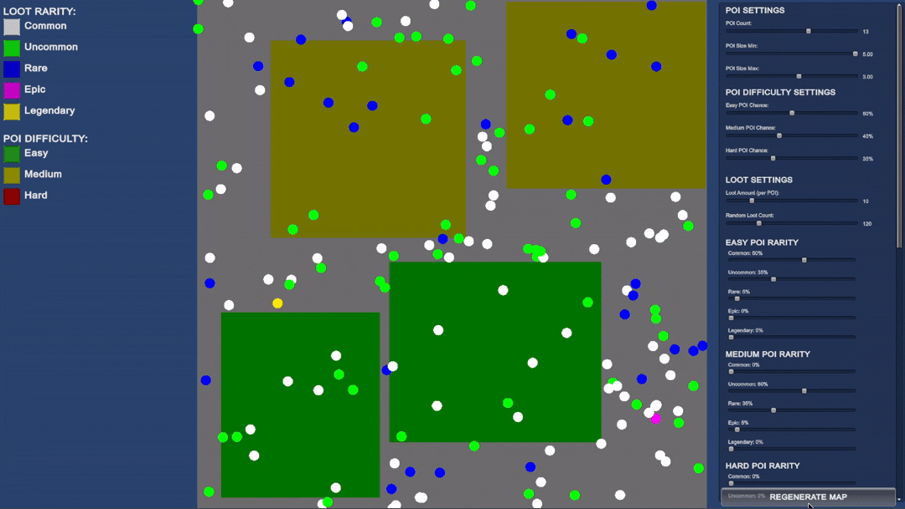
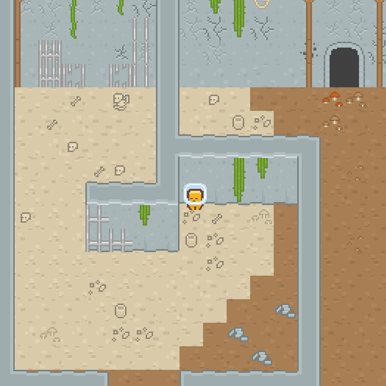
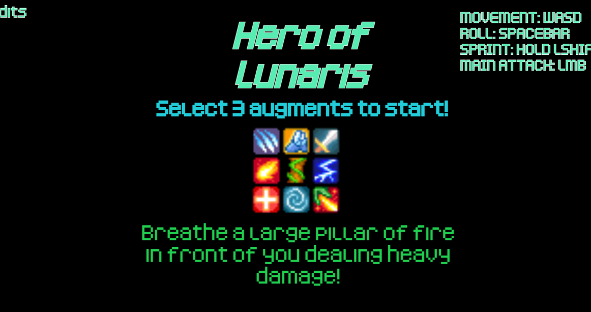
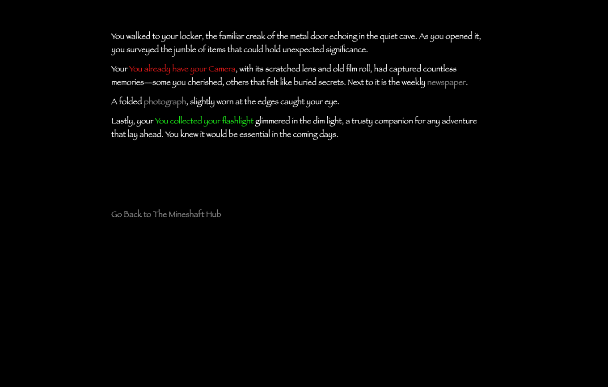

Microprojects
Smaller projects that showcase my game development and software engineering skills.

Loot Map Location Tool
I developed a procedural generation tool in Unity that dynamically distributes points of interest and loot locations across a 2D map. The system supports scalable dungeon difficulty levels and implements a structured loot rarity hierarchy ranging from common to legendary.

Dungeon Break
Dungeon Break is a top-down escape room game where players assume the role of a prisonor attempting to escape form the depths of a dungeon. The game challenges players to strategically use available resources and solve enviornmental puzzles to progress. It featues interactive doors and dynamic object.
Customer Database
I built a simple command-line customer database in C, designed to add and delete customer information. The program tracks user data such as name, email, shoe size, and favorite food using structured data types for efficient storage and access. The codebase is modularly organized, with separate directories for business logic and execution with custom test cases to validate functionality.

Hero of Lunaris
I contributed to a demo top-down RPG where players select augmentations that enhance their stats and grant special combat abilities. This project helped me build a strong foundation in core game development principles, including combat system design, player progression mechanics, and overall gameplay balance.

The Man In The Mine
A text-based horror experience built around branching narratives. Players take on the role of a miner attempting to survive an encounter with the “Man in the Mine.” The game focuses on choice-driven storytelling, where each decision leads to different outcomes and routes, showcasing narrative design and player agency.